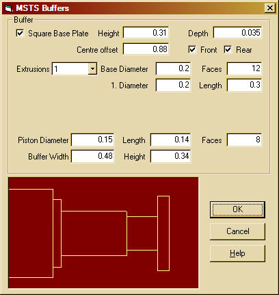
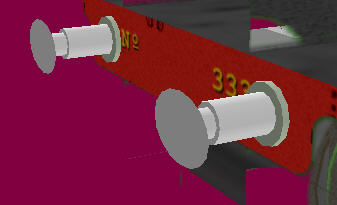
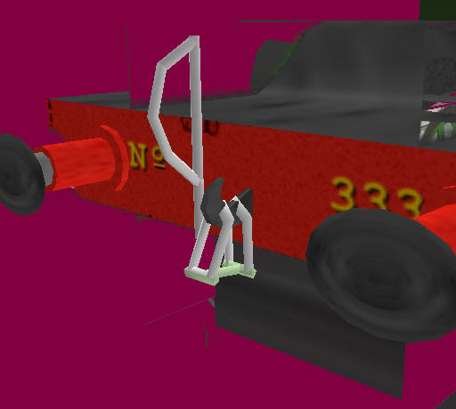
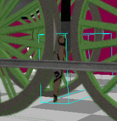
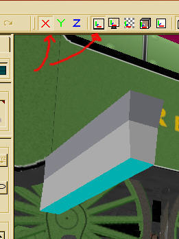
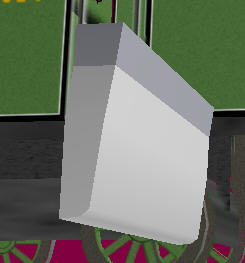
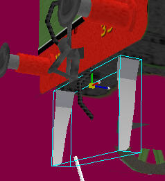
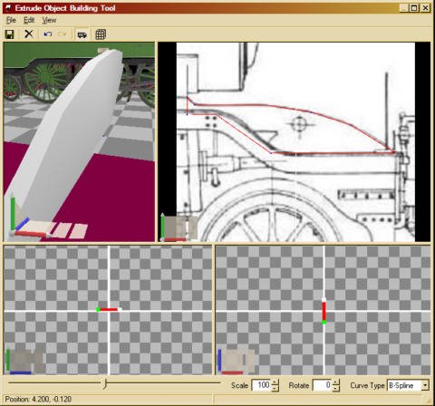

A Steam Loco for MSTS Using 3DCanvas
by Paul "decapod" Gausden
Chapter 8 - Detailing
Sorry, this one is a bit of a rush job as I've got to get it finished off soon. Most of the operations should be second nature by now anyway :)
Sorry, this one is a bit of a rush job as I've got to get it finished off soon. Most of the operations should be second nature by now anyway :)
Trust me to write a Buffer building plugin that does not work for this model - the buffer beam attachment points were round on Remembrance. However, it's all good practice...


Here I make use of objects stored in my library. I recently added the hooked screw coupling and an updated vaccuum pipe. Library objects save a huge amount of time - once you have a reasonably generic part you like, compress its layers and add it to the library for future use.

The lower pipe (steam heat?) was created by adding another vacc pipe from the library and removing a few of the faces. All these extra part object were then dragged into the "bits" group that contains all small objects on or below the footplate. They were also painted, using the fill tool, from areas of the same texture as the rest of the objects in that group.
Due to lack of time, I'm probably going to rush through adding the last few details below the footplate (and miss off a couple completely).




>/li>

Not much more to do now. I'll probably just do the smoke box and bogie details and call it a day. If you've got this far, then any extra detailing is up to you.